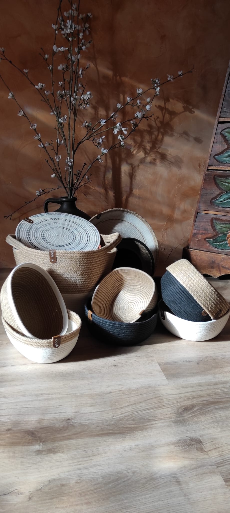
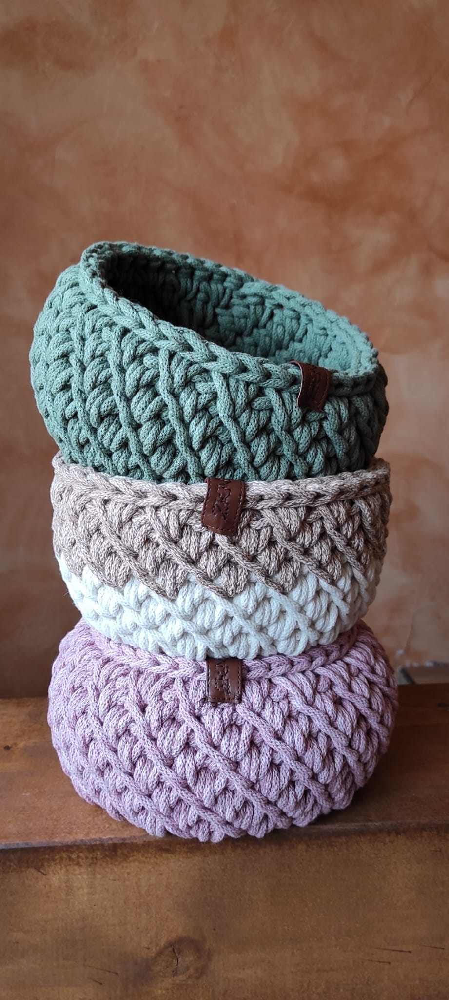
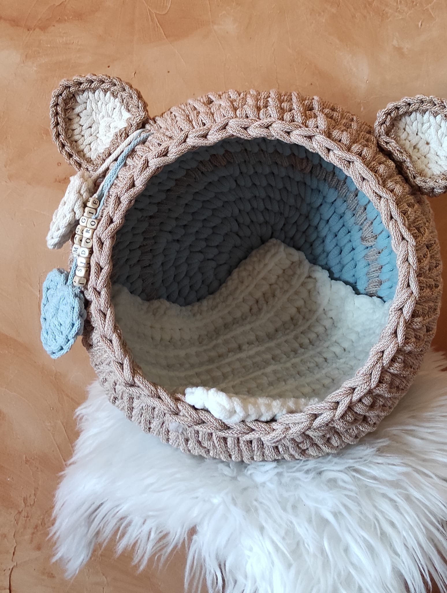
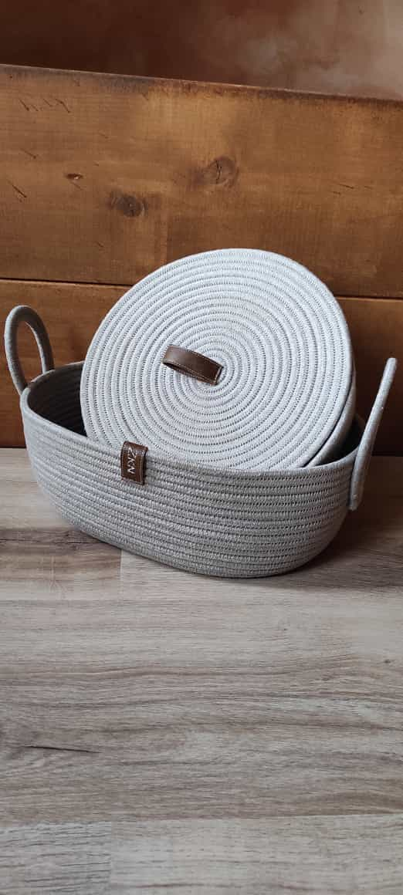
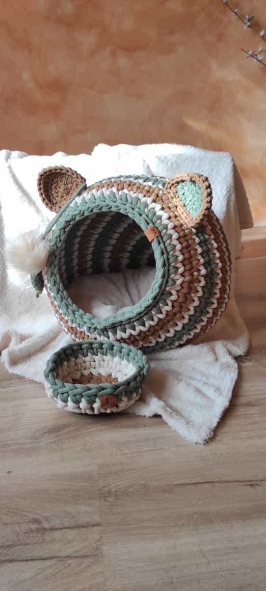

ZKN.home
Passion for decoration and details.
Nordic basketry and crochet items......always surprising with new creations..........and you surprising me with your ideas.
What is Crochet and Basket Weaving?

Crochet is a knitting technique that uses one hook needle, not two needles. It works by making loops and interlacing them to create a variety of patterns and textures in fabrics and clothing. It's a versatile way to make items like blankets, clothing, accessories and decorations.
Instead, baskets typically use a three-dimensional weaving technique that involves the interweaving of flexible materials, such as wicker, bamboo, cane, or even strips of bark, to create objects such as baskets, rugs, and other utilitarian or decorative products.
Gallery




